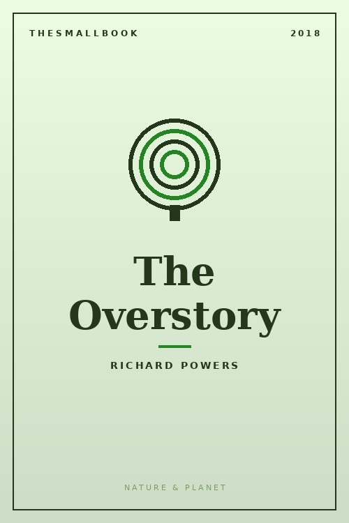

Library › Authors › Richard Powers
Books by Richard Powers
Richard Powers has one book in the library. Every book here is read down to the big idea, the lessons, the lines worth keeping and the actions worth taking. Start with the summary, then buy the full book if it earns a place on your shelf.

The Overstory
2018 · 10 min · 8 lessons
Humans are a recent, brief subplot. The Overstory follows nine people whose lives are bent by trees, and argues that the oldest, largest and most patient beings on Earth have been trying to tell us something we are running out of time to hear.
Richard Powers structures the novel like a tree, roots, trunk, crown, seeds: nine characters, from an Iowa farmer with a chestnut to a Vietnam veteran saved by a banyan, converge on the defence of old growth forests. Interleaved is the science: trees communicate, trade, warn and nurture through fungal networks and air. The book's argument is civilisational: we treat the living world as resource and scenery, and this category error is now billing us.
Lessons in the summary
- Trees Talk, Trade and Raise Their Young
- The Activists Lose, and the Seeds Are the Point
- Attention Is the Smallest Unit of Morality
- Nine Roots: How Lives Get Bent by Trees
- The Novel's Villain Is a Category Error
- Seeds: The Book Trusts You With the Ending
- The Legal Case for a Tree's Rights
- Attention as Activism's Realistic Form
Lines worth keeping
- The best arguments in the world won't change a person's mind. The only thing that can do that is a good story.
- Humans carry around a little book in their heads called the world, and almost nothing in it is true.
- A tree is a passage between earth and sky, and we are the brief guests in its house.
Questions Richard Powers helps answer
Read nearby authors next
- -Yo Ma 1 book
- Aimee Nezhukumatathil 1 book
- Hope Jahren 1 book
- Rachel Carson 1 book